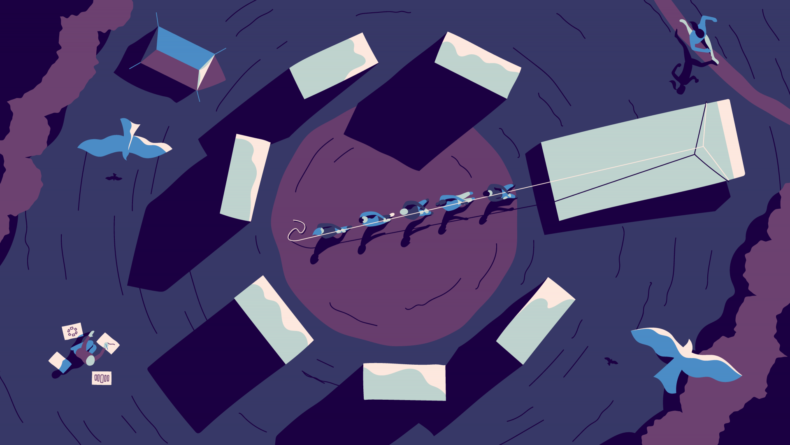

BY TOMAS LAURINAVICIUS IN INSPIRATION
How to accept rejection gracefully — and use it to grow
User research is the reality check every project needs. Here's our guide to why you should be doing it — and how to get started.
New
View all newSEP 04 2018
Our 15 favorite websites from August 2018
SEP 04 2018
The beginners guide to user research
SEP 04 2018
Web page layout 101: website anatomy every designer needs to learn
SEP 04 2018
10 essential sections to a high-converting landing page
Reading Lists
View AllUI Design

UX design

SEO